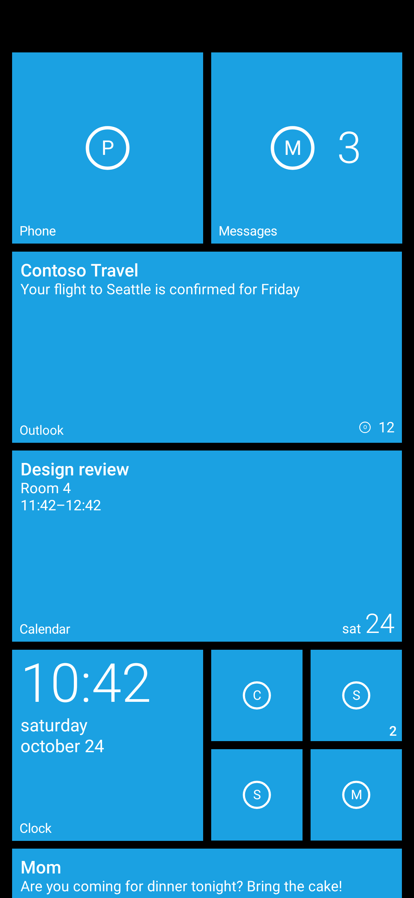
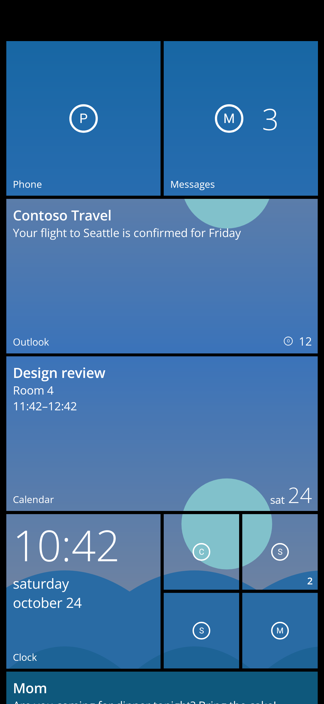
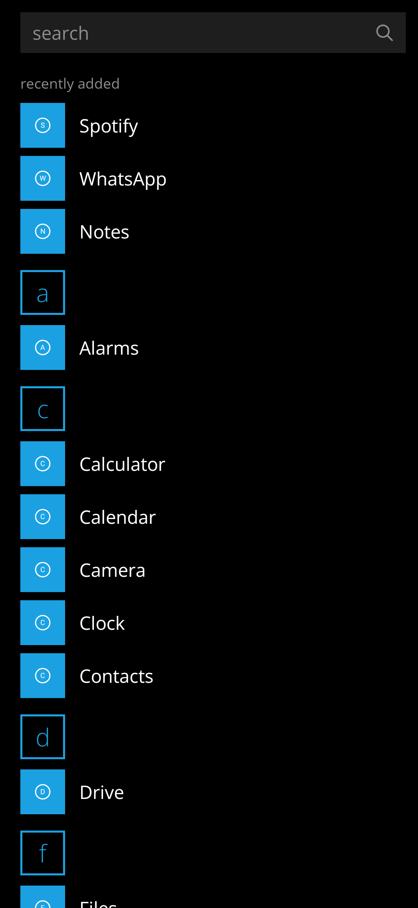
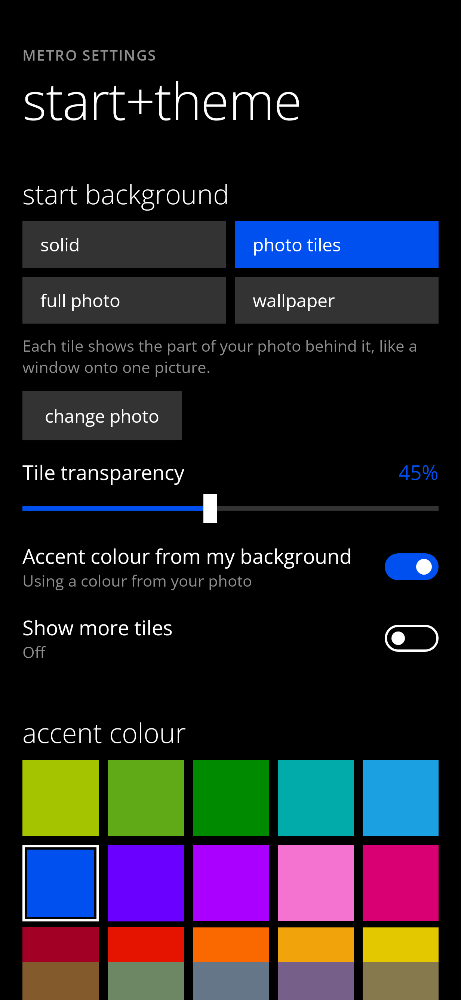

metro launcher




Live tiles for unread messages, music, calendar, weather, photos and people. Small, medium, wide and large tiles, folders, widgets, the 20 classic accent colours and turnstile animations. Built to use almost no battery: nothing runs or animates while the home screen is not on screen.